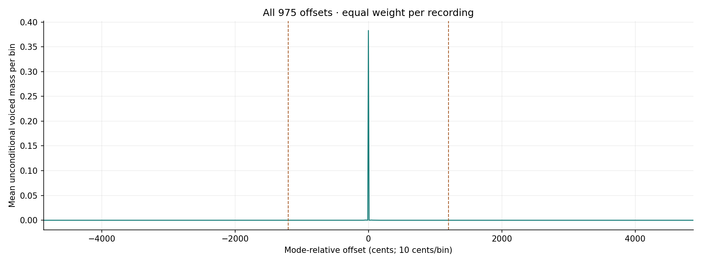
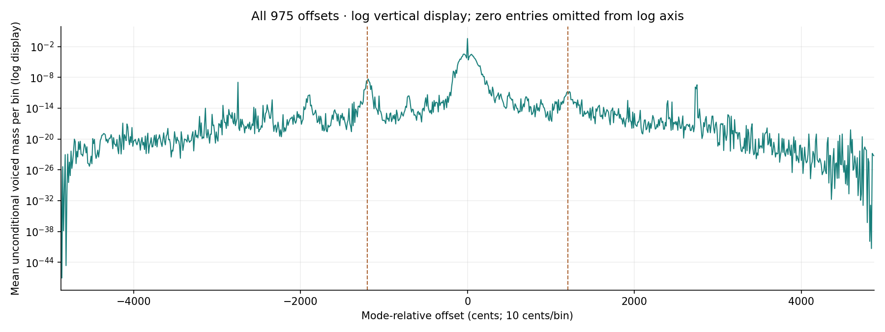
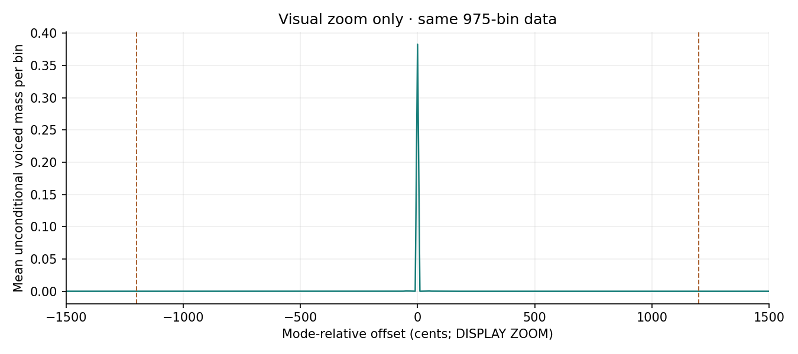
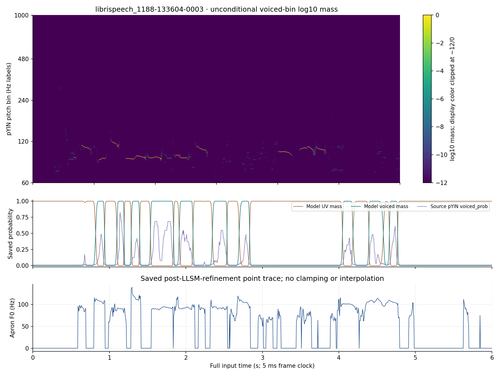

固定120録音の保存結果 · 2026年10月22日
ApronのF0点列と、pYINが各フレームに残した候補支持量
現在の作業ベースApronは、解析とLLSMによる調整を経たF0点列を保存しています。同じ入力から、固定したpYIN状態モデルが各候補へ配る支持量を記録しました。固定120録音・40話者、計123,307フレームを保存値から確認しました。録音ごとに先に平均し、120録音を同じ重みで集計すると、UV状態の平均質量は0.614275、有声候補全体は0.385725です。これはモデル内の状態支持量で、実際の無音率や正解F0ではありません。
Apronの固定120録音の品質評価は別の研究です。今回の支持量から品質順位やベース変更は決めません。モデルのUVは無声状態であり、無音とは同じ意味ではありません。固定120は既に開発へ使った録音で、未知の最終検証集合ではありません。
有声候補の質量は、最頻ビンの周囲にも残る
各フレームで有声ビンの保存対数周辺量が最大の位置を基準0とし、10セント刻みで全975オフセットを並べました。同点は低いビンを選びます。0が最大なのはこの定義によるものです。中央の量だけをF0への自信や正しさの証拠とは読みません。グラフには無条件の有声質量を使い、UVが優勢なフレームを有声内で再正規化していません。

全975点。±1200セントの破線は距離の目印で、オクターブ誤りの判定線ではありません。全975点を対数縦軸で表示

小さい値を見るための表示変更です。ゼロは対数軸に置けないため描画から外し、元の値と集計には残しています。
中央部分の表示拡大

見せる範囲だけを変えました。集計には全975点を使っています。
公開済み2録音では、UVと有声候補を同じ時計で見る
上段は各有声ビンの無条件log10質量です。色は表示上だけ−12から0に収め、元配列は変えていません。中段のモデルUV・有声質量は前後のフレームを使った周辺量で、紫線は元のpYINが出したフレームごとのvoiced_probです。下段は保存済みApronのLLSM調整後F0点列で、候補格子から外れた値も切り詰めずに表示します。点列を真値や独立フレームの経路とは扱いません。
librispeech_1089-134686-0008
図は録音全長です。下の既公開音声は先頭5秒だけです。小さい画面では図を開いて拡大できます。
librispeech_1188-133604-0003
図は録音全長です。下の既公開音声は先頭5秒だけです。小さい画面では図を開いて拡大できます。

保存値と読み方の境界
科学処理は凍結commit 1a1181bac001fae325a5381cd9a11f6b07076b75で完了しています。この草稿は保存済み配列から別に集計したもので、pYINや前後向き計算を呼んでいません。対象と再現方法、記述集計と実行receipt、120録音の個別JSON目録、図の元配列SHAと色尺度、計測条件と原本の識別を付けました。完全なO行列と有声ビン対数周辺配列はローカルに保持し、この公開成果へ複製していません。正規化の最大記録差は対数1.37e-10、線形質量1.37e-10です。丸めの許容幅を後から設けていません。
最初の記述監査はゼロ件数を二重加算したため、元記録を残して訂正監査の識別子を記録しました。科学配列と実行結果には変更がありません。次に必要なのは図から精度を推定することではなく、別に定義した真値と条件での検証です。
図と個票は保存済み値から選び、新しい音声は掲載していません。音声の帰属と条件は既公開レポートに従います。